تصاویر قابل پیگیری
۱۳ تصویر ارسالی در اپ استفاده شدهاند. تصویر سؤال ۱۵ فصل ۳ به دلیل نوشتهٔ افزوده کنار گذاشته شده و تصویر کتاب موقتاً نمایش داده میشود.
فصل ۳ | سؤال ۱۲
لازم؛ فایل تازه نرسیدهمدل ذرهای سه ماده در تصویر کتاب کموضوح است. فایل متناظر در بستهٔ ارسالی نیست.
صورت سؤال کتاب
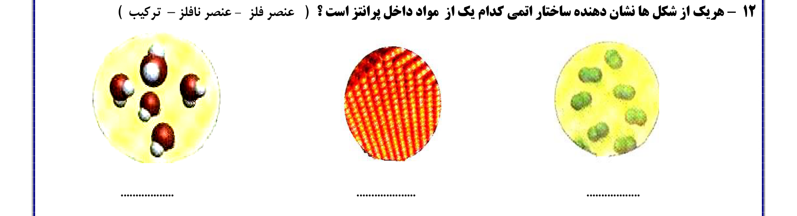
پاسخ کتابکار
پرامپت پیشنهادی؛ تصویر اصلی کتاب را مرجع قرار بده
با استفاده از تصویر سؤال اصلی به عنوان مرجع، فقط سه مدل ذرهای را با همان ترتیب و ساختار بازطراحی کن: سمت راست هفت مولکول دواتمی همنوع، وسط آرایش فشرده و منظم اتمهای همنوع فلز، سمت چپ چهار مولکول آب مطابق مرجع. تعداد، رنگ و اتصال ذرهها را حفظ کن. پسزمینه سفید، خطوط واضح و خروجی حداقل ۱۶۰۰ پیکسل عرض. هیچ نام ماده، شماره، پاسخ یا نوشتهٔ جدیدی اضافه نکن. زیر هر شکل فقط خط جای خالی مطابق مرجع بماند.
فصل ۳ | سؤال ۱۵
لازم؛ نسخهٔ بدون زیرنویس اضافهفایل ارسالی موجود است اما عبارت «مدل ایزوتوپی: اکسیژن ۱۶ و کربن ۱۲» در کتاب نیست. نسخهٔ فعلی برای حفظ عین سؤال وارد نمایش دانشآموز نشده است.
صورت سؤال کتاب
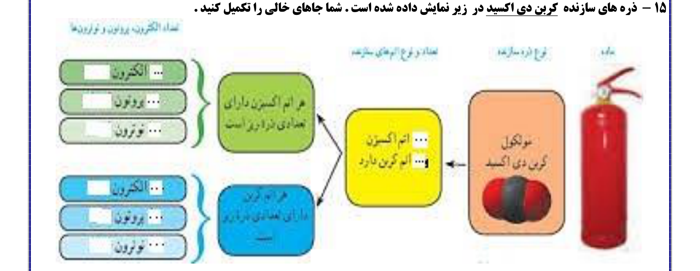
پاسخ کتابکار
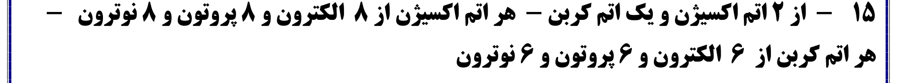
پرامپت پیشنهادی؛ تصویر اصلی کتاب را مرجع قرار بده
همان نمودار کربن دی اکسیدِ تصویر اصلی کتاب را تمیز و خوانا بازطراحی کن. ترتیب از راست به چپ: ماده و کپسول، مولکول کربن دی اکسید، تعداد دو نوع اتم با دو خانهٔ خالی، شاخهٔ هر اتم اکسیژن و هر اتم کربن، و سه خانهٔ خالی الکترون و پروتون و نوترون برای هر شاخه. تمام نوشتههای مرجع عیناً بمانند و هر هشت خانه خالی بماند. هیچ عددِ پاسخ، شمارهٔ تازه، زیرنویس ایزوتوپی، توضیح یا جملهٔ افزوده ننویس. خروجی PNG با پسزمینهٔ سفید و عرض حداقل ۲۰۰۰ پیکسل.
فصل ۳ | سؤال ۱۶ / فصل ۳ | چهارگزینهای ۵
اختیاری؛ ارتقای کیفیت فایل موجودفایل مشترک با نام چهارگزینهای ۵ موجود و برای هر دو سؤال استفاده شده است. نوشتههای کوچک مدلها هنوز کیفیت چاپی ندارند؛ نسخهٔ واضحتر مفید است.
صورت سؤال کتاب
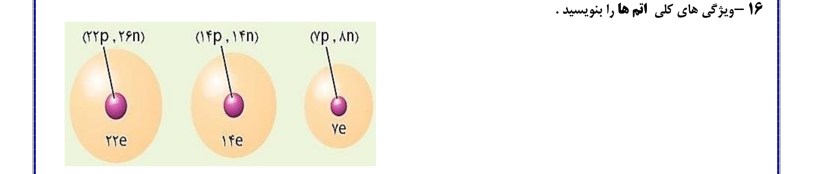
پاسخ کتابکار
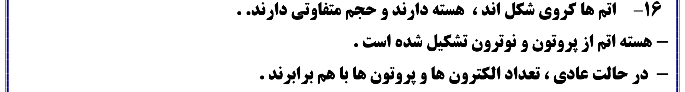
پرامپت پیشنهادی؛ تصویر اصلی کتاب را مرجع قرار بده
سه مدل اتمیِ مرجع کتاب را با همان اندازههای نسبی و همان ترتیب بازطراحی کن. از راست: هسته با (7p, 8n) و برچسب 7e؛ وسط (14p, 14n) و 14e؛ چپ (22p, 26n) و 22e. شکلها، محل پیکانها و همهٔ برچسبها دقیقاً مطابق مرجع باشند. اعداد و حروف را به صورت تایپ واضح وارد کن، هیچ لایهٔ الکترونی، ذرهٔ اضافی، جواب، عنوان یا توضیح جدید اضافه نکن. خروجی PNG با عرض حداقل ۱۸۰۰ پیکسل. پیش از تحویل همهٔ اعداد با مرجع تطبیق داده شوند.
فصل ۳ | سؤال ۱۷
اختیاری؛ ارتقای کیفیت فایل موجودفایل ارسالی موجود است و استفاده شده، اما لبهٔ شکل و نوشتهٔ «هسته اتم» همچنان کموضوحاند.
صورت سؤال کتاب
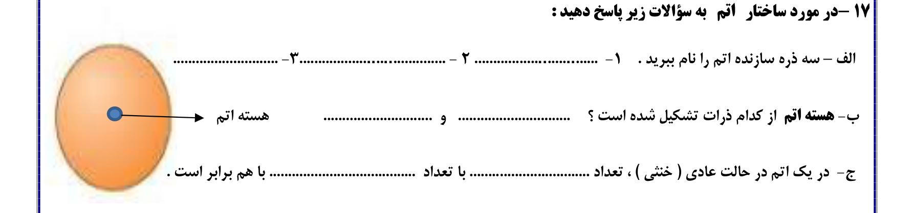
پاسخ کتابکار
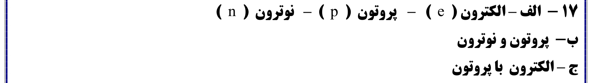
پرامپت پیشنهادی؛ تصویر اصلی کتاب را مرجع قرار بده
فقط شکل ساختار اتمِ مرجع را واضح بازطراحی کن: همان بیضی نارنجی، دایرهٔ آبی کوچک در همان محل، پیکان سیاه به سمت راست و عین عبارت «هسته اتم». نسبت ابعاد و محل برچسب حفظ شود. هیچ ذره، مدار، نام، شماره یا نوشتهٔ دیگری اضافه نشود. پسزمینه سفید، خطوط واضح و خروجی PNG حداقل ۱۰۰۰ در ۷۰۰ پیکسل.
فصل ۳ | سؤال ۲۲
پیشنهادی؛ تصویر تازه نرسیدهتصویر کتاب برای نمایش اولیه موجود است؛ تصویر واضحترِ دو آزمایش، تشخیص بادکنک بادشده و افتاده را آسانتر میکند.
صورت سؤال کتاب
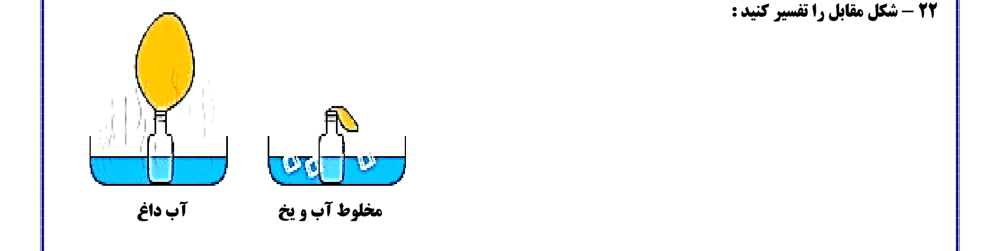
پاسخ کتابکار
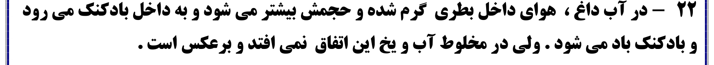
پرامپت پیشنهادی؛ تصویر اصلی کتاب را مرجع قرار بده
دو آزمایش شکل کتاب را دقیقاً با همان ترتیب بازطراحی کن: در سمت چپ ظرف «آب داغ» با بطری و بادکنک بادشده، در سمت راست ظرف «مخلوط آب و یخ» با بطری و بادکنک افتاده. عین دو برچسب کتاب حفظ شود. ارتفاع آب، وضعیت بطریها و حالت بادکنکها مطابق مرجع بماند. هیچ دماسنج، عدد دما، پیکان توضیحی یا پاسخ جدیدی اضافه نکن. زمینه سفید و خروجی حداقل ۱۶۰۰ پیکسل عرض.
فصل ۳ | سؤال ۲۴
پیشنهادی؛ تصویر تازه نرسیدهتصویر اصلی سه حالت آب موجود است؛ نسخهٔ خواناتر برای دیدن فاصله و آرایش مولکولها پیشنهاد میشود.
صورت سؤال کتاب
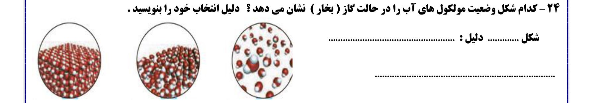
پاسخ کتابکار
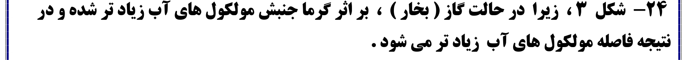
پرامپت پیشنهادی؛ تصویر اصلی کتاب را مرجع قرار بده
سه دایرهٔ مدل مولکولهای آب را دقیقاً مطابق تصویر کتاب بازطراحی کن: چپ حالت جامد با آرایش فشرده و منظم، وسط مایع با مولکولهای نزدیک و نامنظم، راست گاز با فاصلههای زیاد. هر واحد، همان مدل مولکول آبِ مرجع با اتمها و اتصالهای یکسان باشد. ترتیب، تعداد ذرهها، حدود ظرفها و رنگها را از مرجع حفظ کن. هیچ نام حالت، شماره، پیکان، توضیح یا پاسخ روی تصویر ننویس. خروجی PNG خوانا و حداقل ۱۸۰۰ پیکسل عرض.
فصل ۱ | سؤال ۴
صفحهٔ ۲ کتاب کار ۱۴۰۵
صورت کامل سؤال
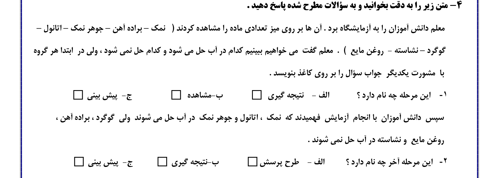
پاسخ اصلی پاسخنامه
راهنماهای تمرین
قسمت ۱
راهنمای ۱: ببین دانشآموزان پاسخ احتمالی را پیش از انجام آزمایش نوشتهاند یا پس از دیدن نتیجه آن.
راهنمای ۲: در این لحظه هنوز شواهد آزمایش در دست نیست؛ پس پاسخ گروه یک حدس قابل بررسی درباره اتفاقی است که ممکن است رخ دهد.
قسمت ۲
راهنمای ۱: در بخش دوم، دانشآموزان آزمایش را انجام دادهاند و درباره حلشدن مواد اطلاعات به دست آوردهاند.
راهنمای ۲: مرحله موردنظر باید از یافتههای آزمایش برای پاسخ به پرسش اولیه استفاده کند؛ با دوباره حدس زدن یا صرفاً طرح یک پرسش تفاوت دارد.
فصل ۱ | سؤال ۶
صفحهٔ ۲ کتاب کار ۱۴۰۵
صورت کامل سؤال
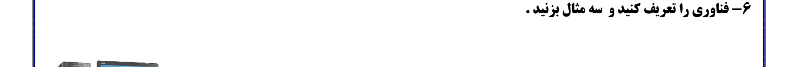
پاسخ اصلی پاسخنامه
راهنماهای تمرین
قسمت ۱
راهنمای ۱: شناخت یک پدیده علمی و استفاده از آن شناخت برای ساخت یک وسیله، دقیقاً یک کار نیستند.
راهنمای ۲: به ساخت دماسنج بر پایه شناخت تغییر دما فکر کن. تعریف مناسب باید رابطه میان شناخت علمی و رفع یک نیاز عملی را توضیح دهد.
قسمت ۲
راهنمای ۱: در این مرحله دنبال چیزهایی باش که انسان آنها را برای رفع نیاز، طراحی و ساخته است.
راهنمای ۲: برای هر گزینه بپرس: آیا ساختن آن به کاربرد آموختهها و طراحی انسان نیاز داشته است یا یک پدیده طبیعی است؟ هر سه نمونه درست از گزینهها پذیرفته میشود.
فصل ۱ | سؤال ۷
صفحهٔ ۲ کتاب کار ۱۴۰۵
صورت کامل سؤال
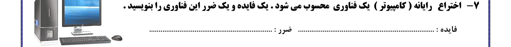
تصویر ارسالی استفادهشده
پاسخ اصلی پاسخنامه
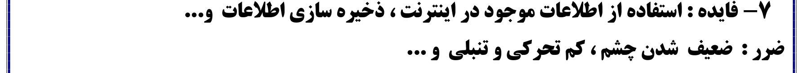
راهنماهای تمرین
قسمت ۱
راهنمای ۱: فایده یک وسیله، کاری است که با استفاده مناسب از آن بهتر یا آسانتر انجام میدهیم.
راهنمای ۲: یک تحقیق درسی و نگهداری پروندههای آن را در نظر بگیر. ببین کدام گزینه به انجام چنین کاری کمک میکند، نه اینکه خودش پیامد استفاده نامناسب باشد.
قسمت ۲
راهنمای ۱: خود وسیله را از شیوه استفاده از آن جدا کن؛ سؤال درباره استفاده طولانی و نامناسب است.
راهنمای ۲: کار کردن بدون وقفه و نشستن طولانی را در نظر بگیر. ببین کدام گزینه با فشار ناشی از این شیوه استفاده بر بدن ارتباط دارد.
فصل ۲ | سؤال ۲
صفحهٔ ۳ کتاب کار ۱۴۰۵
صورت کامل سؤال
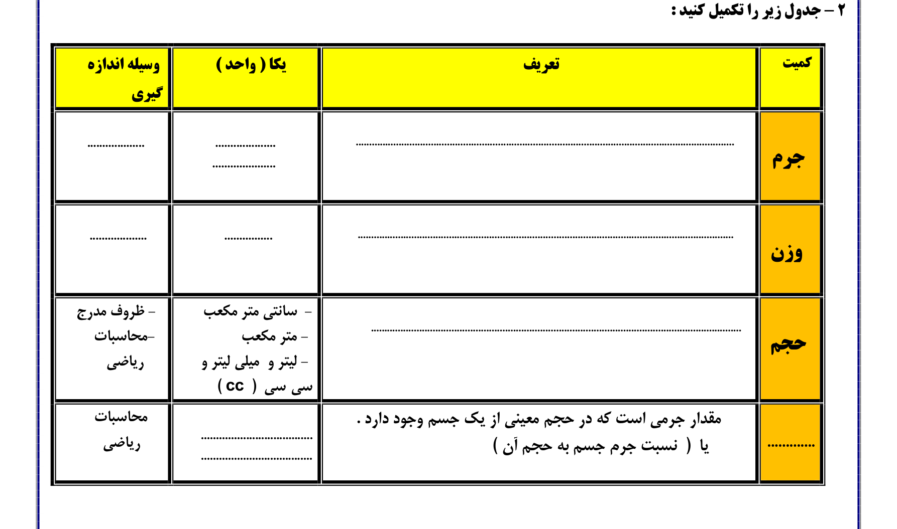
تصویر ارسالی استفادهشده
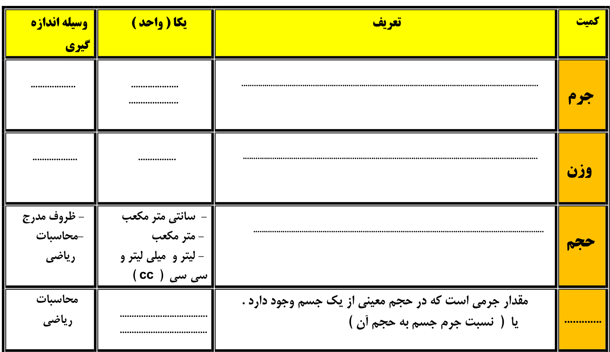
پاسخ اصلی پاسخنامه
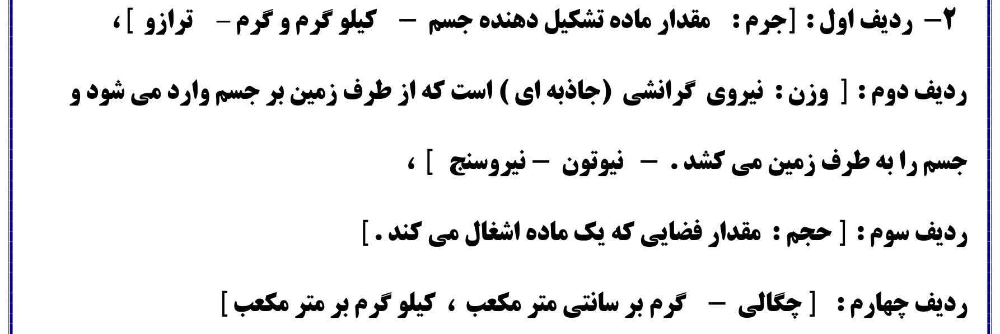
راهنماهای تمرین
قسمت ۱
راهنمای ۱: جرم را از اثر گرانش جدا کن: مقدار ماده یک جسم با جابهجایی آن به ماه تغییر نمیکند.
راهنمای ۲: تعریف، یکا و وسیله این ردیف باید همگی مقدار ماده را بیان کنند. گزینههای مربوط به کشش یا نیروی گرانشی برای این ردیف مناسب نیستند.
قسمت ۲
راهنمای ۱: در این ردیف درباره اثر گرانش بر جسم صحبت میکنیم؛ این کمیت با مقدار ماده تفاوت دارد.
راهنمای ۲: تعریف را با ماهیت نیرو هماهنگ کن. یکا و وسیلهای هم لازم است که بتوانند اثر کشش یا نیرو را نشان دهند، نه فقط مقدار ماده را.
قسمت ۳
راهنمای ۱: دو جسم میتوانند مقدار ماده یکسانی داشته باشند اما یکی فضای بیشتری بگیرد.
راهنمای ۲: به بخشی از فضای ظرف که مایع پر میکند فکر کن. تعریف این ردیف باید درباره اندازه آن فضا باشد، نه درباره گرانش یا مقدار ماده.
قسمت ۴
راهنمای ۱: دو جسم با حجم یکسان را تصور کن که جرمهای متفاوت دارند؛ این ردیف تفاوت آنها را با نسبت دو کمیت بیان میکند.
راهنمای ۲: برای انتخاب یکا، به صورت و مخرج نسبت توجه کن: یکای صورت مربوط به جرم و یکای مخرج مربوط به حجم است. نام کمیت را هم با همین تعریف تطبیق بده.
فصل ۲ | سؤال ۶
صفحهٔ ۴ کتاب کار ۱۴۰۵
صورت کامل سؤال
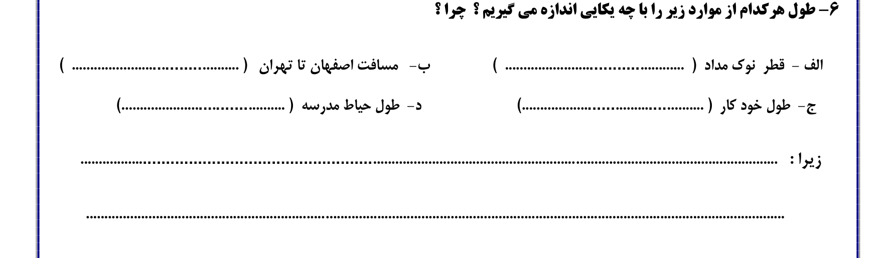
پاسخ اصلی پاسخنامه
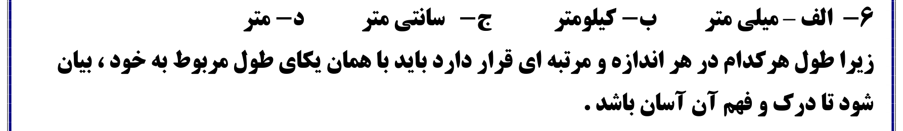
راهنماهای تمرین
قسمت ۱
راهنمای ۱: اندازه تقریبی هر مورد را تصور کن: بسیار ریز، به اندازه یک وسیله دستی، به اندازه یک حیاط، یا فاصله میان شهرها.
راهنمای ۲: از کوچکترین یکا تا بزرگترین، آنها را با این چهار مقیاس هماهنگ کن. هدف این است که عدد اندازهگیری، بسیار بزرگ یا بسیار کوچک نشود.
قسمت ۲
راهنمای ۱: همه این طولها را میتوان با یک یکای مشترک هم نوشت؛ پس علت انتخاب چند یکا، تغییر دادن طول واقعی نیست.
راهنمای ۲: به تعداد رقمهای لازم برای نوشتن فاصله بین دو شهر با یکای بسیار ریز فکر کن. کدام گزینه توضیح میدهد چرا معمولاً مقیاس متناسب با اندازه را برمیگزینیم؟
فصل ۲ | سؤال ۹
صفحهٔ ۴ کتاب کار ۱۴۰۵
صورت کامل سؤال
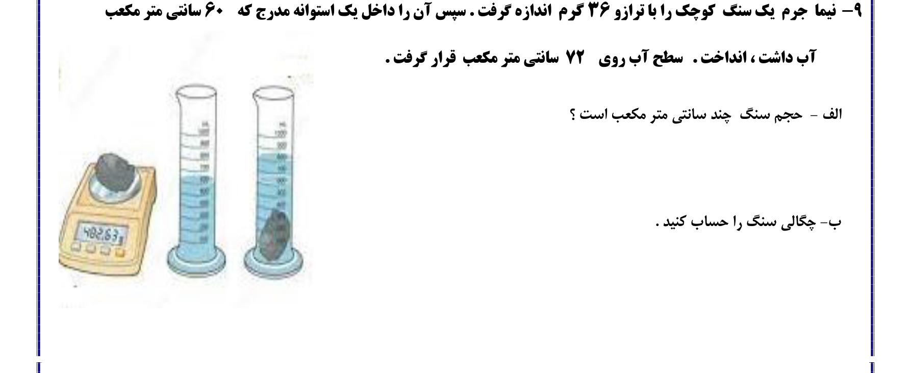
تصویر ارسالی استفادهشده
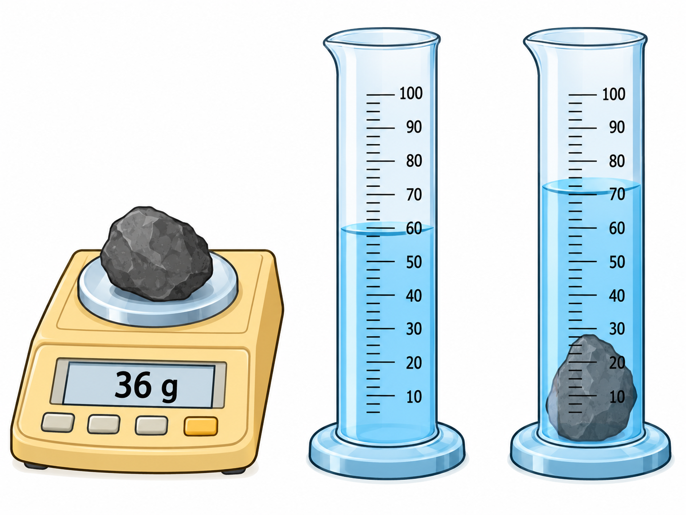
پاسخ اصلی پاسخنامه
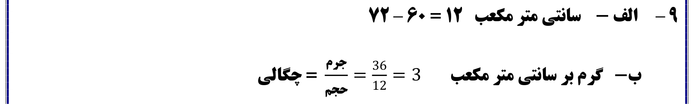
راهنماهای تمرین
قسمت ۱
راهنمای ۱: خواندن استوانه پس از افزودن سنگ، مربوط به آب و سنگ با هم است؛ تمام آن مقدار، حجم سنگ نیست.
راهنمای ۲: دو حجم را که با یک یکا نوشته شدهاند مقایسه کن. فقط بخشی که با ورود سنگ به خواندن اولیه افزوده شده، به سنگ مربوط است.
قسمت ۲
راهنمای ۱: برای سنگ، باید حجم خود سنگ را از قسمت الف به کار ببری؛ حجم کل آب و سنگ برای این محاسبه مناسب نیست.
راهنمای ۲: جرم سنگ را در صورت نسبت و حجم سنگ را در مخرج قرار بده. قبل از محاسبه، بررسی کن واحد نتیجه با جرم بر حجم هماهنگ باشد.
فصل ۲ | سؤال ۱۰
صفحهٔ ۵ کتاب کار ۱۴۰۵
صورت کامل سؤال
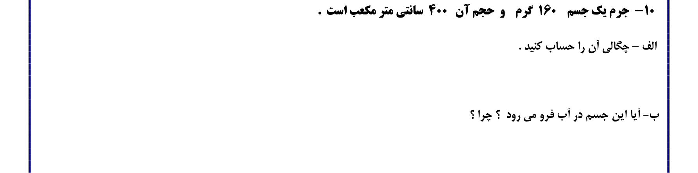
پاسخ اصلی پاسخنامه
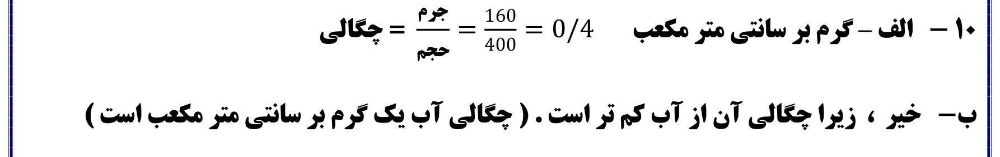
راهنماهای تمرین
قسمت ۱
راهنمای ۱: دو داده این قسمت، جرم و حجم جسماند؛ برای یافتن جرم در یک واحد حجم باید نسبت مناسبی بسازی.
راهنمای ۲: جرم را بر حجم تقسیم کن. اگر تقسیم دشوار است، صورت و مخرج را بر یک عامل مشترک تقسیم کن؛ مقدار نسبت عوض نمیشود.
قسمت ۲
راهنمای ۱: برای پیشبینی شناوری، جرم جسم بهتنهایی کافی نیست؛ چگالی جسم و آب باید با یک یکا مقایسه شوند.
راهنمای ۲: جسم و مقداری آب با حجم برابر را تصور کن. جسمی که از آبِ همحجم خود سبکتر است میتواند شناور بماند؛ حالا نتیجه قسمت الف را با چگالی آب مقایسه کن.
فصل ۲ | سؤال ۱۲
صفحهٔ ۵ کتاب کار ۱۴۰۵
صورت کامل سؤال
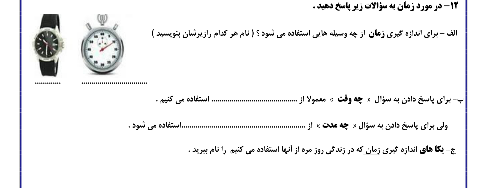
تصویر ارسالی استفادهشده
پاسخ اصلی پاسخنامه
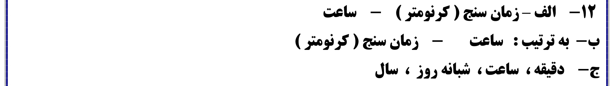
راهنماهای تمرین
قسمت ۱
راهنمای ۱: شمارههای ۱ و ۲ زیر تصویرها را بخوان. یکی وقت روز را نشان میدهد و دیگری مدت یک فعالیت را از شروع تا توقف میسنجد.
راهنمای ۲: وجود دکمه شروع و توقف را با کار هر وسیله مرتبط کن. نام آن را از گزینهها پیدا کن، بدون اینکه ترتیب شمارهها را با راست و چپ عوض کنی.
قسمت ۲
راهنمای ۱: «چه وقت» یک زمان مشخص را میپرسد، اما «چه مدت» فاصله میان شروع و پایان یک فعالیت را میخواهد.
راهنمای ۲: زمان شروع کلاس و مدت دویدن یک مسابقه را مقایسه کن. برای هر کدام، وسیلهای را انتخاب کن که معمولاً همان نوع اطلاعات را میدهد.
قسمت ۳
راهنمای ۱: گزینهها باید بازههای زمانی را بیان کنند؛ نام وسیله یا یکای کمیت دیگر، یکای زمان نیست.
راهنمای ۲: به مقیاسهای کوتاه روی ابزار اندازهگیری و مقیاسهای بزرگتر در برنامه روزانه و تقویم فکر کن. از میان یکاهای درست، چهار مورد را انتخاب کن.
فصل ۲ | سؤال ۱۴
صفحهٔ ۵ کتاب کار ۱۴۰۵
صورت کامل سؤال
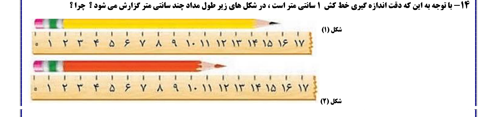
تصویر ارسالی استفادهشده
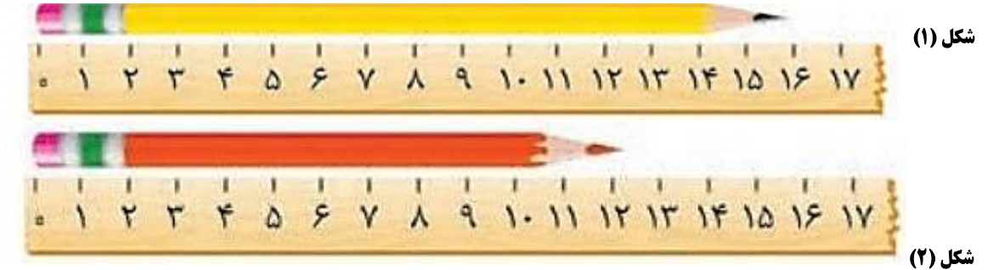
پاسخ اصلی پاسخنامه
راهنماهای تمرین
قسمت ۱
راهنمای ۱: ابتدای مداد را با صفر خطکش مقایسه کن و بعد محل نوک آن را بخوان؛ طول از ابتدای مداد تا نوک آن است.
راهنمای ۲: برای هر شکل، دو عدد صحیح دو طرف نوک مداد را پیدا کن و فاصله نوک تا آنها را مقایسه کن. عدد نزدیکتر را در دقت خواستهشده انتخاب کن.
قسمت ۲
راهنمای ۱: بین مقدار تقریبی دیدهشده روی شکل و تعداد رقمهایی که سؤال برای گزارش میخواهد تفاوت وجود دارد.
راهنمای ۲: در این سؤال دقت یک سانتیمتر خواسته شده است؛ وجود جزئیات ریزتر در تصویر بهتنهایی مجوز نوشتن رقمهای اعشاری بیشتر نیست.
فصل ۲ | سؤال ۱۵
صفحهٔ ۶ کتاب کار ۱۴۰۵
صورت کامل سؤال
تصویر ارسالی استفادهشده
پاسخ اصلی پاسخنامه
راهنماهای تمرین
قسمت ۱
راهنمای ۱: شمارههای ۱، ۲ و ۳ را با شکل ابزارها هماهنگ کن؛ شماره ۳ به گروه سه ابزار سمت راست اشاره دارد.
راهنمای ۲: به کفه شماره ۱، ظرف درجهدار شماره ۲ و فنر یا آویز ابزارهای شماره ۳ توجه کن. از شکل و روش کار، نام ابزار را پیدا کن.
قسمت ۲
راهنمای ۱: جرم و وزن یک کمیت نیستند؛ همچنین خواندن یک ظرف درجهدار با اندازهگیری نیروی کشش تفاوت دارد.
راهنمای ۲: شماره ۱ برای مقدار ماده، شماره ۲ برای فضای اشغالشده در ظرف و شماره ۳ برای اثر کشش به کار میروند. این کاربردها را با نام کمیتهای گزینهها تطبیق بده.
فصل ۳ | سؤال ۱۸
صفحهٔ ۹ کتاب کار ۱۴۰۵
صورت کامل سؤال
پاسخ اصلی پاسخنامه
راهنماهای تمرین
قسمت ۱
راهنمای ۱: برای مقایسهٔ حجم، جرم هر سه نمونه باید برابر باشد و جرم ظرف یا توپ با جرم ماده اشتباه نشود.
راهنمای ۲: برای هوا، جرم توپ را قبل و بعد از بادکردن مقایسه کن؛ تغییر جرم مربوط به هوای افزودهشده است. پس از آمادهشدن هر سه نمونه، حجمها را مقایسه کن.
قسمت ۲
راهنمای ۱: سه نمونه جرم یکسان دارند، اما چگالی و حجم آنها یکسان نیست.
راهنمای ۲: حجم اشغالشده توسط نمونهٔ گازی را با دو نمونهٔ دیگر مقایسه کن؛ به ترتیب نوشتهشده در صورت سؤال دقت کن.
فصل ۳ | سؤال ۲۰
صفحهٔ ۱۰ کتاب کار ۱۴۰۵
صورت کامل سؤال
پاسخ اصلی پاسخنامه
راهنماهای تمرین
قسمت ۱
راهنمای ۱: فشردهشدن به امکان کمشدن فاصلهٔ ذرهها وابسته است.
راهنمای ۲: در میان حالتهای جامد، مایع و گاز، حالتی را بررسی کن که فاصلهٔ ذراتش بیشتر است.
قسمت ۲
راهنمای ۱: کاهش حجم به معنی نابودی ذرهها نیست.
راهنمای ۲: تغییر فاصلهٔ میان مولکولها را از تغییر تعداد یا جنس آنها جدا کن.
فصل ۳ | سؤال ۲۱
صفحهٔ ۱۰ کتاب کار ۱۴۰۵
صورت کامل سؤال
پاسخ اصلی پاسخنامه
راهنماهای تمرین
قسمت ۱
راهنمای ۱: ارتفاع ستونها مقدار افزایش حجم را نشان میدهد؛ ترتیب نامها را از روی محور افقی حدس نزن.
راهنمای ۲: ابتدا حالت ماده را برای هر نام مشخص کن، سپس بیشترین و کمترین افزایش را پیدا کن و دو ستون باقیمانده را مقایسه کن.
قسمت ۲
راهنمای ۱: نتیجهگیری را با ارتفاع همین چهار ستون مقایسه کن.
راهنمای ۲: در صورت سؤال مقدار ماده و گرمای دادهشده یکسان در نظر گرفته شدهاند؛ ترتیب مقایسهٔ نوشتهشده را با دادهٔ نمودار تطبیق بده.
فصل ۳ | سؤال ۲۴
صفحهٔ ۱۱ کتاب کار ۱۴۰۵
صورت کامل سؤال
پاسخ اصلی پاسخنامه
راهنماهای تمرین
قسمت ۱
راهنمای ۱: برای تشخیص گاز به فاصله و پراکندگی مولکولها توجه کن.
راهنمای ۲: تعداد یا رنگ مولکولها معیار اصلی نیست؛ شکلی را بررسی کن که ذرهها در فضای بیشتری از هم دور شدهاند.
قسمت ۲
راهنمای ۱: در بخار هم مولکول آب وجود دارد؛ حالت ماده با حذف مولکولها عوض نمیشود.
راهنمای ۲: رابطهٔ افزایش جنبش و فاصلهٔ ذرات را در مدلی که انتخاب کردی بررسی کن.